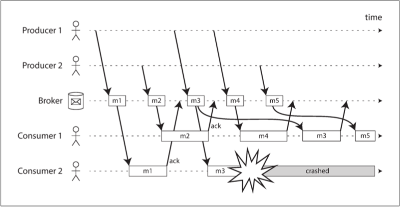

第十一章：流处理
很多数据是 无界限 的，因为它随着时间的推移而逐渐到达：用户在昨天和今天产生了数据，明天他们将继续产生更多的数据。这些数据集从来就不会以任何有意义的方式 “完成”【1】。
- 批处理程序必须将数据人为地分成固定时间段的数据块，例如，在每天结束时处理一天的数据，或者在每小时结束时处理一小时的数据。
为了减少延迟，我们可以更频繁地运行处理 ，如在每秒钟的末尾。或者更连续，当事件发生时就立即进行处理，这就是 流处理（stream processing） 背后的想法。
一般来说，“流” 是指随着时间的推移逐渐可用的数据。这个概念出现在很多地方：Unix 的 stdin 和 stdout、编程语言（惰性列表）【2】、文件系统 API（如 Java 的 FileInputStream）、TCP 连接、通过互联网传送音频和视频等等。
本章把 事件流（event stream） 视为一种数据管理机制：无界限，增量处理，与上一章中的批量数据相对应。
传递事件流
在流处理的上下文中，记录通常被叫做 事件（event） ：一个小的、自包含的、不可变的对象，包含某个时间点发生的某件事情的细节。通常包含一个来自日历时钟的时间戳，以指明事件发生的时间。
事件可能被编码为文本字符串或 JSON，或者某种二进制编码。可以存储一个事件，将其追加到一个文件，将其插入关系表，或将其写入文档数据库，通过网络发送等。
流处理术语中，一个事件由 生产者（producer） （也称为 发布者（publisher） 或 发送者（sender） ）生成一次，然后可能由多个 消费者（consumer） （ 订阅者（subscribers） 或 接收者（recipients） ）进行处理【3】。
在文件系统中，文件名标识一组相关记录；在流式系统中，相关的事件通常被聚合为一个 主题（topic） 或 流（stream） 。
原则上讲，文件或数据库就足以连接生产者和消费者：生产者将其生成的每个事件写入数据存储，且每个消费者定期轮询数据存储，检查自上次运行以来新出现的事件。这实际上正是批处理在每天结束时处理当天数据时所做的事情。
- 低延迟的连续处理：如果数据存储不是为这种用途专门设计的，那么轮询开销就会很大。
- 关系型数据库通常有 触发器（trigger），但是它们的功能非常有限，并且在数据库设计中有些后顾之忧【4,5】。
消息传递系统
向消费者通知新事件的常用方式是使用 消息传递系统（messaging system）：生产者发送包含事件的消息，然后将消息推送给消费者。
Unix 管道和 TCP 将恰好一个发送者与恰好一个接收者连接。而一个消息传递系统允许多个生产者节点将消息发送到同一个主题，并允许多个消费者节点接收主题中的消息。
在这个 发布 / 订阅 模式中，不同的系统采取各种各样的方法，并没有针对所有目的的通用答案。
- 如果生产者发送消息的速度比消费者能够处理的速度快会发生什么
- 丢掉消息、将消息放入缓冲队列、或使用 背压（backpressure，也称为 流量控制，即 flow control：阻塞生产者，以免其发送更多的消息）。
- Unix 管道和 TCP 就使用了背压：它们有一个固定大小的小缓冲区，如果填满，发送者会被阻塞，直到接收者从缓冲区中取出数据。
- 如果节点崩溃或暂时脱机，会发生什么情况？ —— 是否会有消息丢失？
- 持久性可能需要写入磁盘和 / 或复制的某种组合这是有代价的。如果你能接受有时消息会丢失，则可能在同一硬件上获得更高的吞吐量和更低的延迟。
是否可以接受消息丢失取决于应用：
- 对于周期传输的传感器读数和指标，偶尔丢失的数据点可能并不重要，新值短时间内会再发出；如果大量的消息被丢弃，可能无法立刻意识到指标已经不正确了【7】
- 如果你正在对事件计数，那么它们能够可靠送达是更重要的，因为每个丢失的消息都意味着使计数器的错误扩大
直接从生产者传递给消费者
许多消息传递系统使用生产者和消费者之间的直接网络通信，而不通过中间节点：
- UDP 组播广泛应用于金融行业，例如股票市场，其中低时延非常重要【8】。UDP虽然不可靠，但应用层的协议可以恢复丢失的数据包（生产者必须记住它发送的数据包，以便能按需重新发送数据包）。
- 无代理的消息库，如 ZeroMQ 【9】和 nanomsg 。通过 TCP 或 IP 多播实现发布 / 订阅消息传递。
- StatsD 【10，11】和 Brubeck 【7】使用不可靠的 UDP 消息传递来收集网络中所有机器的指标并对其进行监控。
- 如果消费者在网络上公开了服务，生产者可以直接发送 HTTP 或 RPC 请求将消息推送给使用者。这就是 webhooks 背后的想法【12】。
直接消息传递系统通常要求应用代码意识到消息丢失的可能性。容错程度极为有限：即使协议检测到并重传在网络中丢失的数据包，它们通常也只是假设生产者和消费者始终在线。
如果消费者处于脱机状态，则可能会丢失其不可达时发送的消息。一些协议允许生产者重试失败的消息传递，但当生产者崩溃时，它可能会丢失消息缓冲区及其本应发送的消息，这种方法可能就没用了。
消息代理
一种广泛使用的替代方法是通过 消息代理（message broker，也称为 消息队列，即 message queue）发送消息。
- 消息代理实质上是一种针对处理消息流而优化的数据库；
- 作为服务器运行，生产者和消费者作为客户端连接到服务器。生产者将消息写入代理，消费者通过从代理那里读取来接收消息。
将数据集中在代理上，这些系统可以更容易地容忍来来去去的客户端（连接，断开连接和崩溃），而持久性问题则转移到代理的身上。
- 一些消息代理只将消息保存在内存中，而另一些消息代理（取决于配置）将其写入磁盘，以便在代理崩溃的情况下不会丢失。
- 针对缓慢的消费者，它们通常会允许无上限的排队（而不是丢弃消息或背压），尽管这种选择也可能取决于配置。
排队的结果是，消费者通常是 异步（asynchronous） 的：当生产者发送消息时，通常只会等待代理确认消息已经被缓存，而不等待消息被消费者处理。向消费者递送消息将发生在未来某个未定的时间点 —— 通常在几分之一秒之内，但有时当消息堆积时会显著延迟。
消息代理与数据库的对比
有些消息代理甚至可以使用 XA 或 JTA 参与两阶段提交协议（请参阅 “实践中的分布式事务”），但消息代理和数据库之间仍存在实践上很重要的差异：
- 数据库通常保留数据直至显式删除，而大多数消息代理在消息成功递送给消费者时会自动删除消息。
- 由于它们很快就能删除消息，大多数消息代理都认为它们的工作集相当小。如果代理需要缓冲很多消息，比如因为消费者速度较慢（如果内存装不下消息，可能会溢出到磁盘），每个消息需要更长的处理时间，整体吞吐量可能会恶化【6】。
- 数据库通常支持次级索引和各种搜索数据的方式，而消息代理通常支持按照某种模式匹配主题，订阅其子集。
- 查询数据库时，结果通常基于某个时间点的数据快照；如果另一个客户端随后向数据库写入一些改变了查询结果的内容，则第一个客户端不会发现其先前结果现已过期（除非它重复查询或轮询变更）。相比之下，消息代理不支持任意查询，但是当数据发生变化时（即新消息可用时），它们会通知客户端。
这是关于消息代理的传统观点，它被封装在诸如 JMS 【14】和 AMQP 【15】的标准中，并且被诸如 RabbitMQ、ActiveMQ、HornetQ、Qpid、TIBCO 企业消息服务、IBM MQ、Azure Service Bus 和 Google Cloud Pub/Sub 所实现 【16】。
多个消费者
当多个消费者从同一主题中读取消息时，有两种主要的消息传递模式，如 图 11-1 所示：
- 负载均衡（load balancing）：每条消息都被传递给消费者 之一
- 代理可以为消费者任意分配消息。当处理消息的代价高昂，希望能并行处理消息时，此模式非常有用
- 扇出（fan-out）：每条消息都被传递给 所有 消费者
- 几个独立的消费者各自 “收听” 相同的消息广播，对应批处理中多个不同批处理作业读取同一份输入文件

两种模式可以组合使用：例如，两个独立的消费者组可以每组各订阅同一个主题，每一组都共同收到所有消息，但在每一组内部，每条消息仅由单个节点处理。
确认与重新传递
消费者随时可能会崩溃，所以有一种可能的情况是：代理向消费者递送消息，但消费者没有处理，或者在消费者崩溃之前只进行了部分处理。
- 消息代理使用 确认（acknowledgments）：客户端必须显式告知代理消息处理完毕的时间，以便代理能将消息从队列中移除。
如果与客户端的连接关闭，或者代理超出一段时间未收到确认，代理则认为消息没有被处理，因此它将消息再递送给另一个消费者。
- 可能发生这样的情况，消息 实际上是 处理完毕的，但 确认 在网络中丢失了。需要一种原子提交协议才能处理这种情况。
当与负载均衡相结合时，这种重传行为对消息的顺序有种有趣的影响。如下图所示：
- 消费者通常按照生产者发送的顺序处理消息。消费者 2 在处理消息 m3 时崩溃，与此同时消费者 1 正在处理消息 m4。
- 未确认的消息 m3 随后被重新发送给消费者 1，结果消费者 1 按照 m4，m3，m5 的顺序处理消息。
- 因此 m3 和 m4 的交付顺序与生产者 1 的发送顺序不同。

即使消息代理试图保留消息的顺序（如 JMS 和 AMQP 标准所要求的），负载均衡与重传的组合也不可避免地导致消息被重新排序。
- 为避免此问题，你可以让每个消费者使用单独的队列（即不使用负载均衡功能）。
- 如果消息之间存在因果依赖关系，这就是一个很重要的问题。
分区日志
基于日志的消息代理（log-based message brokers） ：既有数据库的持久存储方式，又有消息传递的低延迟通知。
- AMQP/JMS 风格的消息传递的问题：收到消息是具有破坏性的，因为确认可能导致消息从代理中被删除，因此你不能期望再次运行同一个消费者能得到相同的结果。
使用日志进行消息存储
日志只是磁盘上简单的仅追加记录序列。同样的结构可以用于实现消息代理：
- 生产者通过将消息追加到日志末尾来发送消息，而消费者通过依次读取日志来接收消息。
- 如果消费者读到日志末尾，则会等待新消息追加的通知。
- Unix 工具
tail -f能监视文件被追加写入的数据，基本上就是这样工作的。
为了伸缩超出单个磁盘所能提供的更高吞吐量，可以对日志进行 分区：
- 不同的分区可以托管在不同的机器上，使得每个分区都有一份能独立于其他分区进行读写的日志。
- 一个主题可以定义为一组携带相同类型消息的分区。
如下图11-3所示：
- 在每个分区内，代理为每个消息分配一个单调递增的序列号或 偏移量（offset，框中的数字是消息偏移量）。
- 这种序列号是有意义的，因为分区是仅追加写入的，所以分区内的消息是完全有序的。
- 没有跨不同分区的顺序保证。

Apache Kafka 【17,18】、Amazon Kinesis Streams 【19】和 Twitter 的 DistributedLog 【20,21】都是基于日志的消息代理。Google Cloud Pub/Sub 在架构上类似，但对外暴露的是 JMS 风格的 API，而不是日志抽象【16】。
尽管这些消息代理将所有消息写入磁盘，但通过跨多台机器分区，每秒能够实现数百万条消息的吞吐量，并通过复制消息来实现容错性【22,23】。
日志与传统的消息传递相比
基于日志的方法天然支持扇出式消息传递，因为多个消费者可以独立读取日志，而不会相互影响—— 读取消息不会将其从日志中删除。
为了在一组消费者之间实现负载平衡，代理可以将整个分区分配给消费者组中的节点，而不是将单条消息分配给消费者客户端。每个客户端将消费被指派分区中的 所有 消息。
通常情况下，当一个用户被指派了一个日志分区时，它会以简单的单线程方式顺序地读取分区中的消息。这种粗粒度的负载均衡方法有一些缺点：
-
共享消费主题工作的节点数，最多为该主题中的日志分区数，因为同一个分区内的所有消息被递送到同一个节点 1。
-
如果某条消息处理缓慢，则它会阻塞该分区中后续消息的处理（一种行首阻塞的形式）。
消费者偏移量
顺序消费一个分区使得判断消息是否已经被处理变得相当容易：所有偏移量小于消费者的当前偏移量的消息已经被处理，而具有更大偏移量的消息还没有被看到。
- 代理不需要跟踪确认每条消息，只需要定期记录消费者的偏移即可。提高基于日志的系统的吞吐量。
这种偏移量与单领导者数据库复制中常见的日志序列号非常相似，日志序列号允许跟随者断开连接后，重新连接到领导者，并在不跳过任何写入的情况下恢复复制。这里原理完全相同：消息代理表现得像一个主库，而消费者就像一个从库。
如果消费者节点失效，则失效消费者的分区将指派给其他节点，并从最后记录的偏移量开始消费消息。如果消费者已经处理了后续的消息，但还没有记录它们的偏移量，那么重启后这些消息将被处理两次。本章后面讨论这个问题的处理方法。
磁盘空间使用
为了回收磁盘空间，日志实际上被分割成段，并不时地将旧段删除或移动到归档存储。
-
如果一个慢消费者跟不上消息产生的速率而落后得太多，它的消费偏移量指向了删除的段，那么它就会错过一些消息。
-
日志实现了一个有限大小的缓冲区，当缓冲区填满时会丢弃旧消息，它也被称为 循环缓冲区（circular buffer） 或 环形缓冲区（ring buffer）。
由于缓冲区在磁盘上，因此缓冲区可能相当的大。做个简单计算：
- 在撰写本文时，典型的大型硬盘容量为 6TB，顺序写入吞吐量为 150MB/s。
- 以最快的速度写消息，则需要大约 11 个小时才能填满磁盘。
- 因而磁盘可以缓冲 11 个小时的消息，之后它将开始覆盖旧的消息。
实践中的部署很少能用满磁盘的写入带宽，所以通常可以保存一个几天甚至几周的日志缓冲区。
不管保留多长时间的消息，日志的吞吐量或多或少保持不变，因为无论如何，每个消息都会被写入磁盘【18】。这种行为与默认将消息保存在内存中，仅当队列太长时才写入磁盘的消息传递系统形成鲜明对比。
- 当队列很短时，这些系统非常快；而当这些系统开始写入磁盘时，就要慢的多，所以吞吐量取决于保留的历史数量。
当消费者跟不上生产者时
如果消费者无法跟上生产者发送信息的速度时，我们讨论了三种选择：丢弃信息，进行缓冲或施加背压。
- 基于日志的方法是缓冲的一种形式，具有很大但大小固定的缓冲区（受可用磁盘空间的限制）。
如果消费者远远落后，而所要求的信息比保留在磁盘上的信息还要旧，那么它将不能读取这些信息，所以代理实际上丢弃了比缓冲区容量更大的旧信息。
- 监控消费者落后日志头部的距离，如果落后太多就发出报警。
- 由于缓冲区很大，因而有足够的时间让运维人员来修复慢消费者，并在消息开始丢失之前让其赶上。
即使消费者真的落后太多开始丢失消息，也只有那个消费者受到影响；它不会中断其他消费者的服务。
- 可以实验性地消费生产日志，以进行开发，测试或调试，而不必担心会中断生产服务。
- 当消费者关闭或崩溃时，会停止消耗资源，唯一剩下的只有消费者偏移量。
这种行为也与传统的消息代理形成了鲜明对比，在那种情况下，你需要小心地删除那些消费者已经关闭的队列 —— 否则那些队列就会累积不必要的消息，从其他仍活跃的消费者那里占走内存。
重播旧消息
除了消费者的任何输出之外，处理的唯一副作用是消费者偏移量的前进。但偏移量是在消费者的控制之下的，所以如果需要的话可以很容易地操纵：
- 可以用昨天的偏移量跑一个消费者副本，并将输出写到不同的位置，以便重新处理最近一天的消息。
- 使得基于日志的消息传递更像上一章的批处理，其中衍生数据通过可重复的转换过程与输入数据显式分离。
- 允许进行更多的实验，更容易从错误和漏洞中恢复，使其成为在组织内集成数据流的良好工具【24】。
数据库与流
从消息传递和流中获取灵感，并将它们应用于数据库。
事件是某个时刻发生的事情的记录。发生的事情可能是用户操作（例如键入搜索查询）或读取传感器，但也可能是 写入数据库。某些东西被写入数据库的事实是可以被捕获、存储和处理的事件。
事实上，复制日志是一个由数据库写入事件组成的流，由主库在处理事务时生成。从库将写入流应用到它们自己的数据库副本，从而最终得到相同数据的精确副本。复制日志中的事件描述发生的数据更改。
状态机复制原理，其中指出：如果每个事件代表对数据库的写入，并且每个副本按相同的顺序处理相同的事件，则副本将达到相同的最终状态 （假设事件处理是一个确定性的操作）。这是事件流的又一种场景！
保持系统同步
没有一个系统能够满足所有的数据存储、查询和处理需求。在实践中，大多数重要应用都需要组合使用几种不同的技术来满足所有的需求：
- 使用 OLTP 数据库来为用户请求提供服务，使用缓存来加速常见请求，使用全文索引来处理搜索查询，使用数据仓库用于分析。
由于相同或相关的数据出现在了不同的地方，因此相互间需要保持同步：如果某个项目在数据库中被更新，它也应当在缓存、搜索索引和数据仓库中被更新。
- 对于数据仓库，这种同步通常由 ETL 进程执行。通常是先取得数据库的完整副本，然后执行转换，并批量加载到数据仓库中。
如果周期性的完整数据库转储过于缓慢，有时会使用的替代方法是 双写（dual write）。 - 应用代码在数据变更时明确写入每个系统：例如，首先写入数据库，然后更新搜索索引，然后使缓存项失效（甚至同时执行这些写入）。
双写有一些严重的问题，其中一个是竞争条件，如图 11-4 所示：
- 两个客户端同时想要更新一个项目 X：客户端 1 想要将值设置为 A，客户端 2 想要将其设置为 B。
- 两个客户端首先将新值写入数据库，然后将其写入到搜索索引。
但运气不好，这些请求的时序是交错的：
- 数据库首先看到来自客户端 1 的写入将值设置为 A，然后来自客户端 2 的写入将值设置为 B，因此数据库中的最终值为 B。
- 搜索索引首先看到来自客户端 2 的写入，然后是客户端 1 的写入，所以搜索索引中的最终值是 A。
- 即使没发生错误，这两个系统现在也永久地不一致了。

除非有一些额外的并发检测机制，例如我们在 “检测并发写入” 中讨论的版本向量，否则你甚至不会意识到发生了并发写入 —— 一个值将简单地以无提示方式覆盖另一个值。
双重写入的另一个问题是，其中一个写入可能会失败，而另一个成功。
- 这是一个容错问题，而不是一个并发问题，但也会造成两个系统互相不一致的结果。
- 确保它们要么都成功要么都失败，是原子提交问题的一个例子，解决这个问题的代价是昂贵的（请参阅 “原子提交与两阶段提交”）。
如果实际上只有一个领导者 —— 例如，数据库 —— 而且我们能让搜索索引成为数据库的追随者，情况要好得多。但这在实践中可能吗？
变更数据捕获
大多数数据库的复制日志的问题在于，它们一直被当做数据库的内部实现细节，而不是公开的 API。客户端应该通过其数据模型和查询语言来查询数据库，而不是解析复制日志并尝试从中提取数据。
变更数据捕获（change data capture, CDC）：观察写入数据库的所有数据变更，并将其提取并转换为可以复制到其他系统中的形式的过程。
CDC 当变更能在被写入后立刻用于流时。例如可以捕获数据库中的变更，并不断将相同的变更应用至搜索索引。如果变更日志以相同的顺序应用，则可以预期搜索索引中的数据与数据库中的数据是匹配的。搜索索引和任何其他衍生数据系统只是变更流的消费者。如下图所示：

变更数据捕获的实现
可以将日志消费者叫做 衍生数据系统：在搜索索引和数据仓库中的数据，只是 记录系统 数据的额外视图。变更数据捕获是一种机制，可确保对记录系统所做的所有更改都反映在衍生数据系统中，以便衍生系统具有数据的准确副本。
从本质上说，变更数据捕获使得一个数据库成为领导者（被捕获变化的数据库），并将其他组件变为追随者。基于日志的消息代理非常适合从源数据库传输变更事件，因为它保留了消息的顺序。
数据库触发器可用来实现变更数据捕获，通过注册观察所有变更的触发器，并将相应的变更项写入变更日志表中。
- 但是它们往往是脆弱的，而且有显著的性能开销。
解析复制日志可能是一种更稳健的方法，但它也很有挑战，例如如何应对模式变更。
- LinkedIn 的 Databus【25】，Facebook 的 Wormhole【26】和 Yahoo! 的 Sherpa【27】大规模地应用这个思路；
- Bottled Water 使用解码 WAL 的 API 实现了 PostgreSQL 的 CDC【28】；Maxwell 和 Debezium 通过解析 binlog 对 MySQL 做了类似的事情【29,30,31】；Mongoriver 读取 MongoDB oplog【32,33】； GoldenGate 为 Oracle 提供类似的功能【34,35】。
类似于消息代理，变更数据捕获通常是异步的：记录数据库系统在提交变更之前不会等待消费者应用变更。
- 添加缓慢的消费者不会过度影响记录系统，不过，所有复制延迟可能有的问题在这里都可能出现。
初始快照
如果你拥有 所有 对数据库进行变更的日志，则可以通过重播该日志，来重建数据库的完整状态。
- 永远保留所有更改会耗费太多磁盘空间，且重播过于费时，因此日志需要被截断。
例如，构建新的全文索引需要整个数据库的完整副本 —— 仅仅应用最近变更的日志是不够的，因为这样会丢失最近未曾更新的项目。
- 如果你没有完整的历史日志，则需要从一个一致的快照开始；
- 数据库的快照必须与变更日志中的已知位置或偏移量相对应，以便在处理完快照后知道从哪里开始应用变更
日志压缩
如果你只能保留有限的历史日志，则每次要添加新的衍生数据系统时，都需要做一次快照。但 日志压缩（log compaction） 提供了一个很好的备选方案。
日志压缩的原理：存储引擎定期在日志中查找具有相同键的记录，丢掉所有重复的内容，并只保留每个键的最新更新。这个压缩与合并过程在后台运行。
- 在日志结构存储引擎中，具有特殊值 NULL（墓碑，即 tombstone）的更新表示该键被删除，并会在日志压缩过程中被移除。
- 具有特殊值 NULL（墓碑，即 tombstone）的更新表示该键被删除，并会在日志压缩过程中被移除。
- 压缩日志所需的磁盘空间仅取决于数据库的当前内容，不取决于数据库中曾经发生的写入次数。
如果 CDC 系统被配置为，每个变更都包含一个主键，且每个键的更新都替换了该键以前的值，那么只需要保留对键的最新写入就足够了。
无论何时需要重建衍生数据系统（如搜索索引），你可以从压缩日志主题的零偏移量处启动新的消费者，然后依次扫描日志中的所有消息。日志能保证包含数据库中每个键的最新值（也可能是一些较旧的值）—— 换句话说，你可以使用它来获取数据库内容的完整副本，而无需从 CDC 源数据库取一个快照。
Apache Kafka 支持这种日志压缩功能。允许消息代理被当成持久性存储使用，而不仅仅是用于临时消息。
变更流的API支持
越来越多的数据库开始将变更流作为第一等的接口。例如，RethinkDB 允许查询订阅通知，当查询结果变更时获得通知【36】，Firebase 【37】和 CouchDB 【38】基于变更流进行同步，该变更流同样可用于应用。而 Meteor 使用 MongoDB oplog 订阅数据变更，并改变了用户接口【39】。
VoltDB 允许事务以流的形式连续地从数据库中导出数据【40】
Kafka Connect【41】致力于将广泛的数据库系统的变更数据捕获工具与 Kafka 集成。
事件溯源
与变更数据捕获类似，事件溯源涉及到 将所有对应用状态的变更 存储为变更事件日志。最大的区别是事件溯源将这一想法应用到了一个不同的抽象层次上：
- 在变更数据捕获中，应用以 可变方式（mutable way） 使用数据库，可以任意更新和删除记录。写入数据库的应用不需要知道 CDC 的存在。
- 在事件溯源中，应用逻辑显式构建在写入事件日志的不可变事件之上。事件存储是仅追加写入的，更新与删除是不鼓励的或禁止的。事件被设计为旨在反映应用层面发生的事情，而不是底层的状态变更。
事件溯源是一种强大的数据建模技术：从应用的角度来看，将用户的行为记录为不可变的事件更有意义，而不是在可变数据库中记录这些行为的影响。事件溯源使得应用随时间演化更为容易，通过更容易理解事情发生的原因来帮助调试的进行，并有利于防止应用 Bug。
事件溯源方法允许将新的副作用轻松地从现有事件中脱开。
-
例如，存储 “学生取消选课” 事件以中性的方式清楚地表达了单个行为的意图，而其副作用 “从登记表中删除了一个条目，而一条取消原因的记录被添加到学生反馈表” 则嵌入了很多有关稍后对数据的使用方式的假设。
-
如果引入一个新的应用功能，例如 “将位置留给等待列表中的下一个人”，则达到解开的目的；
事件溯源类似于 编年史（chronicle） 数据模型【45】，诸如 Event Store【46】这样的专业数据库已经被开发出来，供使用事件溯源的应用使用，这种方法独立于任何特定的工具。传统的数据库或基于日志的消息代理也可以用来构建这种风格的应用。
从事件日志中派生出当前状态
事件日志本身并不是很有用，因为用户通常期望看到的是系统的当前状态，而不是变更历史。
用事件溯源的应用需要拉取事件日志（表示 写入 系统的数据），并将其转换为适合向用户显示的应用状态（从系统 读取 数据的方式【47】）。
- 转换可以使用任意逻辑，但它应当是确定性的，以便能再次运行，并从事件日志中衍生出相同的应用状态。
与变更数据捕获一样，重播事件日志允许让你重新构建系统的当前状态。不过，日志压缩需要采用不同的方式处理：
- 用于记录更新的 CDC 事件通常包含记录的 完整新版本，因此主键的当前值完全由该主键的最近事件确定，而日志压缩可以丢弃相同主键的先前事件。
- 事件溯源在更高层次进行建模：事件通常表示用户操作的意图，而不是因为操作而发生的状态更新机制。后面的事件通常不会覆盖先前的事件，所以你需要完整的历史事件来重新构建最终状态。这里进行同样的日志压缩是不可能的。
使用事件溯源的应用通常有一些机制，用于存储从事件日志中导出的当前状态快照，因此它们不需要重复处理完整的日志。
- 这只是一种性能优化，用来加速读取，提高从崩溃中恢复的速度；
- 真正的目的是系统能够永久存储所有原始事件，并在需要时重新处理完整的事件日志。
命令和事件
事件溯源的哲学是仔细区分 事件（event） 和 命令（command）【48】。
- 当来自用户的请求刚到达时它一开始是一个命令：在这个时间点上它仍然可能失败，比如，因为违反了一些完整性条件。
- 如果验证成功并且命令被接受，则它变为一个持久化且不可变的事件。
在事件生成的时刻，它就成为了 事实（fact）。即使客户稍后决定更改或取消预订，他们之前曾预定了某个特定座位的事实仍然成立，而更改或取消是之后添加的单独的事件。
- 例如，如果用户试图注册特定用户名，或预定飞机或剧院的座位，则应用需要检查用户名或座位是否已被占用。当检查成功时，应用可以生成一个事件，指示特定的用户名是由特定的用户 ID 注册的，或者座位已经预留给特定的顾客。
事件流的消费者不允许拒绝事件：当消费者看到事件时，它已经成为日志中不可变的一部分，并且可能已经被其他消费者看到了。因此任何对命令的验证，都需要在它成为事件之前同步完成。
- 或者，预订座位的用户请求可以拆分为两个事件：第一个是暂时预约，第二个是验证预约后的独立的确认事件 。这种分割方式允许验证发生在一个异步的过程中。
状态、流和不变性
不变性原则也是使得事件溯源与变更数据捕获如此强大的原因。
状态的本质是，它会变化，所以数据库才会支持数据的增删改。这又该如何匹配不变性呢？
- 只要你的状态发生了变化，那么这个状态就是这段时间中事件修改的结果。
无论状态如何变化，总是有一系列事件导致了这些变化。
- 即使事情已经执行与回滚，这些事件出现是始终成立的。
可变的状态与不可变事件的仅追加日志相互之间并不矛盾：它们是一体两面，互为阴阳的。所有变化的日志 —— 变化日志（changelog），表示了随时间演变的状态。
如果你倾向于数学表示，那么你可能会说，应用状态是事件流对时间求积分得到的结果，而变更流是状态对时间求微分的结果，如 图 11-6 所示【49,50,51】。
- 这个比喻有一些局限性（例如，状态的二阶导似乎没有意义），但这是考虑数据的一个实用出发点。

正如帕特・赫兰（Pat Helland）所说的【52】：
事务日志记录了数据库的所有变更。高速追加是更改日志的唯一方法。从这个角度来看，数据库的内容其实是日志中记录最新值的缓存。日志才是真相，数据库是日志子集的缓存，这一缓存子集恰好来自日志中每条记录与索引值的最新值。
日志压缩是连接日志与数据库状态之间的桥梁：它只保留每条记录的最新版本，并丢弃被覆盖的版本。
不可变事件的优点
数据库中的不变性是一个古老的概念。例如，会计在几个世纪以来一直在财务记账中应用不变性。
- 一笔交易发生时，它被记录在一个仅追加写入的分类帐中，实质上是描述货币、商品或服务转手的事件日志。
- 账目，比如利润、亏损、资产负债表，是从分类账中的交易求和衍生而来【53】。
如果发生错误，会计师不会删除或更改分类帐中的错误交易 —— 而是添加另一笔交易以补偿错误，例如退还一笔不正确的费用。
- 不正确的交易将永远保留在分类帐中，对于审计而言可能非常重要。
- 如果从不正确的分类账衍生出的错误数字已经公布，那么下一个会计周期的数字就会包括一个更正。这个过程在会计事务中是很常见的【54】。
不可变的事件也包含了比当前状态更多的信息。例如在购物网站上，顾客可以将物品添加到他们的购物车，然后再将其移除。虽然从履行订单的角度，第二个事件取消了第一个事件，但对分析目的而言，知道客户考虑过某个特定项而之后又反悔，可能是很有用的。也许他们会选择在未来购买，或者他们已经找到了替代品。这个信息被记录在事件日志中，但对于移出购物车就删除记录的数据库而言，这个信息在移出购物车时可能就丢失了【42】。
从同一事件日志中派生多个视图
通过从不变的事件日志中分离出可变的状态，你可以针对不同的读取方式，从相同的事件日志中衍生出几种不同的表现形式。效果就像一个流的多个消费者一样（图11-5）：
- 分析型数据库 Druid 使用这种方式直接从 Kafka 摄取数据【55】，Pistachio 是一个分布式的键值存储，使用 Kafka 作为提交日志【56】，Kafka Connect 能将来自 Kafka 的数据导出到各种不同的数据库与索引【41】。
添加从事件日志到数据库的显式转换，能够使应用更容易地随时间演进：如果你想要引入一个新功能，以新的方式表示现有数据，则可以使用事件日志来构建一个单独的、针对新功能的读取优化视图，无需修改现有系统而与之共存。
- 并行运行新旧系统通常比在现有系统中执行复杂的模式迁移更容易。一旦不再需要旧的系统，你可以简单地关闭它并回收其资源【47,57】。
模式设计、索引和存储引擎的许多复杂性，都是希望支持某些特定查询和访问模式的结果。通过将数据写入的形式与读取形式相分离，并允许几个不同的读取视图，你能获得很大的灵活性。这个想法有时被称为 命令查询责任分离（command query responsibility segregation, CQRS）【42,58,59】。
数据库和模式设计的传统方法是基于这样一种谬论，数据必须以与查询相同的形式写入。
- 如果可以将数据从针对写入优化的事件日志转换为针对读取优化的应用状态，那么有关规范化和非规范化的争论就变得无关紧要了。
- 在针对读取优化的视图中对数据进行非规范化是完全合理的，因为翻译过程提供了使其与事件日志保持一致的机制。
并发控制
事件溯源和变更数据捕获的最大缺点是，事件日志的消费者通常是异步的：用户会写入日志，然后从日志衍生视图中读取，结果发现他的写入还没有反映在读取视图中。
- 一种解决方案是将事件追加到日志时同步执行读取视图的更新；将这些写入操作合并为一个原子单元需要 事务，所以要么将事件日志和读取视图保存在同一个存储系统中，要么就需要跨不同系统进行分布式事务。
从事件日志导出当前状态也简化了并发控制的某些部分。
- 对于多对象事务的需求，源于单个用户操作需要在多个不同的位置更改数据。通过事件溯源，你可以设计一个自包含的事件以表示一个用户操作。然后用户操作就只需要在一个地方进行单次写入操作 —— 即将事件附加到日志中 —— 这个还是很容易使原子化的。
如果事件日志与应用状态以相同的方式分区（例如，处理分区 3 中的客户事件只需要更新分区 3 中的应用状态），那么直接使用单线程日志消费者就不需要写入并发控制了。它从设计上一次只处理一个事件。
。日志通过在分区中定义事件的序列顺序，消除了并发性的不确定性【24】。如果一个事件触及多个状态分区，那么需要做更多的工作，我们将在 第十二章 讨论。
不变性的局限性
许多不使用事件溯源模型的系统也还是依赖不可变性：各种数据库在内部使用不可变的数据结构或多版本数据来支持时间点快照。Git、Mercurial 和 Fossil 等版本控制系统也依靠不可变的数据来保存文件的版本历史记录。
永远保持所有变更的不变历史，在多大程度上是可行的？答案取决于数据集的流失率。
- 一些工作负载主要是添加数据，很少更新或删除；它们很容易保持不变。其他工作负载在相对较小的数据集上有较高的更新 / 删除率；在这些情况下，不可变的历史可能增至难以接受的巨大，碎片化可能成为一个问题，压缩与垃圾收集的表现对于运维的稳健性变得至关重要【60,61】。
除了性能方面的原因外，也可能有出于管理方面的原因需要删除数据的情况，尽管这些数据都是不可变的。
- 例如，隐私条例可能要求在用户关闭帐户后删除他们的个人信息，数据保护立法可能要求删除错误的信息，或者可能需要阻止敏感信息的意外泄露。
在这种情况下，仅仅在日志中添加另一个事件来指明先前的数据应该被视为删除是不够的：
- 实际上是想改写历史，并假装数据从一开始就没有写入。例如，Datomic 管这个特性叫 切除（excision） 【62】，而 Fossil 版本控制系统有一个类似的概念叫 避免（shunning） 【63】。
真正删除数据是非常非常困难的【64】，因为副本可能存在于很多地方：例如，存储引擎，文件系统和 SSD 通常会向一个新位置写入，而不是原地覆盖旧数据【52】，而备份通常是特意做成不可变的，防止意外删除或损坏。
- 删除操作更多的是指 “使取回数据更困难”，而不是指 “使取回数据不可能”。无论如何，有时你必须得尝试。
流处理
可以用流做什么。一般来说，有三种选项：
- 将事件中的数据写入数据库、缓存、搜索索引或类似的存储系统，然后能被其他客户端查询。如图11-5所示，这是数据库与系统其他部分所发生的变更保持同步的好方法
- 以某种方式将事件推送给用户，例如发送报警邮件或推送通知，或将事件流式传输到可实时显示的仪表板上。在这种情况下，人是流的最终消费者。
- 处理一个或多个输入流，并产生一个或多个输出流。流可能会经过由几个这样的处理阶段组成的流水线，最后再输出（选项 1 或 2）。
在本章的剩余部分中，我们将讨论选项 3：处理流以产生其他衍生流。
- 处理这样的流的代码片段，被称为 算子（operator） 或 作业（job）。
- 一个流处理器以只读的方式使用输入流，并将其输出以仅追加的方式写入一个不同的位置。
流处理中的分区和并行化模式也非常类似于 第十章 中介绍的 MapReduce 和数据流引擎，因此我们不再重复这些主题。基本的 Map 操作（如转换和过滤记录）也是一样的。
- 与批量作业相比的一个关键区别是，流不会结束。因此无法使用 排序合并连接。
- 容错机制也必须改变：对于已经运行了几分钟的批处理作业，可以简单地从头开始重启失败任务，但是对于已经运行数年的流作业，重启后从头开始跑可能并不是一个可行的选项。
流处理的应用
长期以来，流处理一直用于监控目的，如果某个事件发生，组织希望能得到警报。例如：
- 欺诈检测系统需要确定信用卡的使用模式是否有意外地变化，如果信用卡可能已被盗刷，则锁卡。
- 交易系统需要检查金融市场的价格变化，并根据指定的规则进行交易。
- 制造系统需要监控工厂中机器的状态，如果出现故障，可以快速定位问题。
- 军事和情报系统需要跟踪潜在侵略者的活动，并在出现袭击征兆时发出警报。
这些类型的应用需要非常精密复杂的模式匹配与相关检测。然而随着时代的进步，流处理的其他用途也开始出现。
复合事件处理
复合事件处理（complex event processing, CEP） 是 20 世纪 90 年代为分析事件流而开发出的一种方法，尤其适用于需要搜索某些事件模式的应用【65,66】。CEP 允许你指定规则以在流中搜索某些事件模式。
CEP 系统通常使用高层次的声明式查询语言，比如 SQL，或者图形用户界面，来描述应该检测到的事件模式。这些查询被提交给处理引擎，该引擎消费输入流，并在内部维护一个执行所需匹配的状态机。当发现匹配时，引擎发出一个 复合事件（即 complex event，CEP 因此得名），并附有检测到的事件模式详情【67】。
在这些系统中，查询和数据之间的关系与普通数据库相比是颠倒的。
- 通常情况下，数据库会持久存储数据，并将查询视为临时的：当查询进入时，数据库搜索与查询匹配的数据，然后在查询完成时丢掉查询。
- CEP 引擎反转了角色：查询是长期存储的，来自输入流的事件不断流过它们，搜索匹配事件模式的查询【68】。
CEP 的实现包括 Esper【69】、IBM InfoSphere Streams【70】、Apama、TIBCO StreamBase 和 SQLstream。像 Samza 这样的分布式流处理组件，支持使用 SQL 在流上进行声明式查询【71】。
流分析
CEP 与流分析之间的边界是模糊的，但一般来说，分析往往对找出特定事件序列并不关心，而更关注大量事件上的聚合与统计指标 —— 例如：
- 测量某种类型事件的速率（每个时间间隔内发生的频率）
- 滚动计算一段时间窗口内某个值的平均值
- 将当前的统计值与先前的时间区间的值对比（例如，检测趋势，当指标与上周同比异常偏高或偏低时报警）
这些统计值通常是在固定时间区间内进行计算的，例如，你可能想知道在过去 5 分钟内服务每秒查询次数的均值，以及此时间段内响应时间的第 99 百分位点。
- 在几分钟内取平均，能抹平秒和秒之间的无关波动，且仍然能向你展示流量模式的时间图景。聚合的时间间隔称为 窗口（window）
流分析系统有时会使用概率算法，例如 Bloom filter来管理成员资格，HyperLogLog【72】用于基数估计以及各种百分比估计算法。概率算法产出近似的结果，但比起精确算法的优点是内存使用要少得多。使用近似算法有时让人们觉得流处理系统总是有损的和不精确的，但这是错误看法：流处理并没有任何内在的近似性，而概率算法只是一种优化【73】。
许多开源分布式流处理框架的设计都是针对分析设计的：例如 Apache Storm、Spark Streaming、Flink、Concord、Samza 和 Kafka Streams 【74】。托管服务包括 Google Cloud Dataflow 和 Azure Stream Analytics。
维护物化视图
数据库的变更流可以用于维护衍生数据系统（如缓存、搜索索引和数据仓库），并使其与源数据库保持最新。我们可以将这些示例视作维护 物化视图（materialized view） 的一种具体场景：在某个数据集上衍生出一个替代视图以便高效查询，并在底层数据变更时更新视图【50】。
同样，在事件溯源中，应用程序的状态是通过应用事件日志来维护的；这里的应用程序状态也是一种物化视图。与流分析场景不同的是，仅考虑某个时间窗口内的事件通常是不够的：构建物化视图可能需要任意时间段内的 所有 事件，除了那些可能由日志压缩丢弃的过时事件。实际上，你需要一个可以一直延伸到时间开端的窗口。
原则上讲，任何流处理组件都可以用于维护物化视图，尽管 “永远运行” 与一些面向分析的框架假设的 “主要在有限时间段窗口上运行” 背道而驰，Samza 和 Kafka Streams 支持这种用法，建立在 Kafka 对日志压缩的支持上【75】。
在流上搜索
除了允许搜索由多个事件构成模式的 CEP 外，有时也存在基于复杂标准（例如全文搜索查询）来搜索单个事件的需求。
例如，媒体监测服务可以订阅新闻文章 Feed 与来自媒体的播客，搜索任何关于公司、产品或感兴趣的话题的新闻。
- 通过预先构建一个搜索查询来完成的，然后不断地将新闻项的流与该查询进行匹配。
Elasticsearch 的这种过滤器功能，是实现这种流搜索的一种选择【76】。
传统的搜索引擎首先索引文件，然后在索引上跑查询。相比之下，搜索一个数据流则反了过来：查询被存储下来，文档从查询中流过，就像在 CEP 中一样。
- 最简单的情况就是，你可以为每个文档测试每个查询。但是如果你有大量查询，这可能会变慢。为了优化这个过程，可以像对文档一样，为查询建立索引。因而收窄可能匹配的查询集合【77】。
消息传递和RPC
消息传递系统可以作为 RPC 的替代方案，即作为一种服务间通信的机制，比如在 Actor 模型中所使用的那样。尽管这些系统也是基于消息和事件，但我们通常不会将其视作流处理组件：
- Actor 框架主要是管理模块通信的并发和分布式执行的一种机制，而流处理主要是一种数据管理技术。
- Actor 之间的交流往往是短暂的、一对一的；而事件日志则是持久的、多订阅者的。
- Actor 可以以任意方式进行通信（包括循环的请求 / 响应模式），但流处理通常配置在无环流水线中，其中每个流都是一个特定作业的输出，由良好定义的输入流中派生而来。
也就是说，RPC 类系统与流处理之间有一些交叉领域。例如，Apache Storm 有一个称为 分布式 RPC 的功能，它允许将用户查询分散到一系列也处理事件流的节点上；然后这些查询与来自输入流的事件交织，而结果可以被汇总并发回给用户【78】。
也可以使用 Actor 框架来处理流。但是，很多这样的框架在崩溃时不能保证消息的传递，除非你实现了额外的重试逻辑，否则这种处理不是容错的。
时间推理
流处理通常需要与时间打交道，尤其是用于分析目的时候，会频繁使用时间窗口，例如 “过去五分钟的平均值”。
- 读取运行批处理机器的系统时钟没有任何意义，因为处理运行的时间与事件实际发生的时间无关。
使用事件中的时间戳，使得处理是 确定性 的：在相同的输入上再次运行相同的处理过程会得到相同的结果。
许多流处理框架使用处理机器上的本地系统时钟（处理时间，即 processing time）来确定 窗口（windowing）【79】。
- 简单，如果事件创建与事件处理之间的延迟可以忽略不计，那也是合理；
- 如果存在任何显著的处理延迟 —— 即，事件处理显著地晚于事件实际发生的时间，这种处理方式就失效。
事件时间与处理时间
很多原因都可能导致处理延迟：排队，网络故障，性能问题导致消息代理 / 消息处理器出现争用，流消费者重启，从故障中恢复时重新处理过去的事件，或者在修复代码 BUG 之后。
而且，消息延迟还可能导致无法预测消息顺序。例如，假设用户首先发出一个 Web 请求（由 Web 服务器 A 处理），然后发出第二个请求（由服务器 B 处理）。A 和 B 发出描述它们所处理请求的事件，但是 B 的事件在 A 的事件发生之前到达消息代理。现在，流处理器将首先看到 B 事件，然后看到 A 事件，即使它们实际上是以相反的顺序发生的。
将事件时间和处理时间搞混会导致错误的数据。例如，假设你有一个流处理器用于测量请求速率（计算每秒请求数）。如果你重新部署流处理器，它可能会停止一分钟，并在恢复之后处理积压的事件。如果你按处理时间来衡量速率，那么在处理积压日志时，请求速率看上去就像有一个异常的突发尖峰，而实际上请求速率是稳定的。

知道什么时候准备好了
永远也无法确定是不是已经收到了特定窗口的所有事件，还是说还有一些事件正在来的路上。
- 例如，假设你将事件分组为一分钟的窗口，以便统计每分钟的请求数。
在一段时间没有看到任何新的事件之后，你可以超时并宣布一个窗口已经就绪，但仍然可能发生这种情况：某些事件被缓冲在另一台机器上，由于网络中断而延迟。需要能够处理这种在窗口宣告完成之后到达的 滞留（straggler） 事件。大体上，你有两种选择【1】：
- 忽略这些滞留事件，因为在正常情况下它们可能只是事件中的一小部分。
- 发布一个 更正（correction），一个包括滞留事件的更新窗口值。你可能还需要收回以前的输出。
在某些情况下，可以使用特殊的消息来指示 “从现在开始，不会有比 t 更早时间戳的消息了”，消费者可以使用它来触发窗口【81】。但是，如果不同机器上的多个生产者都在生成事件，每个生产者都有自己的最小时间戳阈值，则消费者需要分别跟踪每个生产者。在这种情况下，添加和删除生产者都是比较棘手的。
你用的是谁的时钟？
当事件可能在系统内多个地方进行缓冲时，为事件分配时间戳更加困难。
- 例如，考虑一个移动应用向服务器上报关于用量的事件。该应用可能会在设备处于脱机状态时被使用
- 它将在设备本地缓冲事件，并在下一次互联网连接可用时向服务器上报这些事件（可能是几小时甚至几天）。对于这个流的任意消费者而言，它们就如延迟极大的滞留事件一样。
在这种情况下，事件上的事件戳实际上应当是用户交互发生的时间，取决于移动设备的本地时钟。
- 用户控制的设备上的时钟通常是不可信的，因为它可能会被无意或故意设置成错误的时间。
- 服务器收到事件的时间（取决于服务器的时钟）可能是更准确的，因为服务器在你的控制之下，但在描述用户交互方面意义不大。
要校正不正确的设备时钟，一种方法是记录三个时间戳【82】：
- 事件发生的时间，取决于设备时钟
- 事件发送往服务器的时间，取决于设备时钟
- 事件被服务器接收的时间，取决于服务器时钟
通过从第三个时间戳中减去第二个时间戳，可以估算设备时钟和服务器时钟之间的偏移（假设网络延迟与所需的时间戳精度相比可忽略不计）。然后可以将该偏移应用于事件时间戳，从而估计事件实际发生的真实时间（假设设备时钟偏移在事件发生时与送往服务器之间没有变化）。
这并不是流处理独有的问题，批处理有着完全一样的时间推理问题。只是在流处理的上下文中，我们更容易意识到时间的流逝。
窗口的类型
当你知道如何确定一个事件的时间戳后，下一步就是如何定义时间段的窗口。有几种窗口很常用【79,83】：
- 滚动窗口（Tumbling Window）：滚动窗口有着固定的长度，每个事件都仅能属于一个窗口。
- 假设 1 分钟的滚动窗口，则所有时间戳在
10:03:00和10:03:59之间的事件会被分组到一个窗口中 10:04:00和10:04:59之间的事件被分组到下一个窗口，依此类推- 通过将每个事件时间戳四舍五入至最近的分钟来确定它所属的窗口，可以实现 1 分钟的滚动窗口。
- 跳动窗口（Hopping Window）：固定的长度，但允许窗口重叠以提供一些平滑。
- 一个带有 1 分钟跳跃步长的 5 分钟窗口将包含
10:03:00至10:07:59之间的事件，而下一个窗口将覆盖10:04:00至10:08:59之间的事件，等等。 - 通过首先计算 1 分钟的滚动窗口（tunmbling window），然后在几个相邻窗口上进行聚合，可以实现这种跳动窗口。
- 滑动窗口（Sliding Window）：彼此间距在特定时长内的所有事件
- 一个 5 分钟的滑动窗口应当覆盖
10:03:39和10:08:12的事件，因为它们相距不超过 5 分钟 - 滚动窗口与步长 5 分钟的跳动窗口可能不会把这两个事件分组到同一个窗口中，因为它们使用固定的边界
- 通过维护一个按时间排序的事件缓冲区，并不断从窗口中移除过期的旧事件，可以实现滑动窗口。
- 会话窗口（Session window）：与其他窗口类型不同，会话窗口没有固定的持续时间
- 将同一用户出现时间相近的所有事件分组在一起，而当用户一段时间没有活动时（例如，如果 30 分钟内没有事件）窗口结束。
流连接
由于流处理将数据管道泛化为对无限数据集进行增量处理，因此对流进行连接的需求也是完全相同的。先来区分三种不同类型的连接：流 - 流 连接，流 - 表 连接，与 表 - 表 连接【84】。
流流连接（窗口连接）
假设你的网站上有搜索功能，而你想要找出搜索 URL 的近期趋势。每当有人键入搜索查询时，都会记录下一个包含查询与其返回结果的事件。每当有人点击其中一个搜索结果时，就会记录另一个记录点击事件。为了计算搜索结果中每个 URL 的点击率，你需要将搜索动作与点击动作的事件连在一起，这些事件通过相同的会话 ID 进行连接。广告系统中需要类似的分析【85】。
- 搜索与点击之间的时间可能是高度可变：在很多情况下，它可能是几秒钟，但也可能长达几天或几周；
- 由于可变的网络延迟，点击事件甚至可能先于搜索事件到达；
- 选择合适的连接窗口 —— 例如，如果点击与搜索之间的时间间隔在一小时内，你可能会选择连接两者。
在点击事件中嵌入搜索详情与事件连接并不一样：这样做的话，只有当用户点击了一个搜索结果时你才能知道，而那些没有点击的搜索就无能为力了。为了衡量搜索质量，你需要准确的点击率，为此搜索事件和点击事件两者都是必要的。
为了实现这种类型的连接，流处理器需要维护 状态：
- 例如，按会话 ID 索引最近一小时内发生的所有事件。无论何时发生搜索事件或点击事件，都会被添加到合适的索引中，而流处理器也会检查另一个索引是否有具有相同会话 ID 的事件到达。
- 如果有匹配事件就会发出一个表示搜索结果被点击的事件；如果搜索事件直到过期都没看见有匹配的点击事件，就会发出一个表示搜索结果未被点击的事件。
流表连接（流扩充）
连接两个数据集的批处理作业示例：一组用户活动事件和一个用户档案数据库。将用户活动事件视为流，并在流处理器中连续执行相同的连接是很自然的想法：输入是包含用户 ID 的活动事件流，而输出还是活动事件流，但其中用户 ID 已经被扩展为用户的档案信息。这个过程有时被称为使用数据库的信息来 扩充（enriching） 活动事件。
要执行此连接，流处理器需要一次处理一个活动事件，在数据库中查找事件的用户 ID，并将档案信息添加到活动事件中。
- 数据库查询可以通过查询远程数据库来实现，此类远程查询可能会很慢，并且有可能导致数据库过载【75】。
- 将数据库副本加载到流处理器中，以便在本地进行查询而无需网络往返。如果数据库的本地副本足够小，则可以是内存中的散列表，比较大的话也可以是本地磁盘上的索引。
流处理器是长时间运行的，且数据库的内容可能随时间而改变，所以流处理器数据库的本地副本需要保持更新。
- 通过变更数据捕获来解决：流处理器可以订阅用户档案数据库的更新日志，如同活动事件流一样。当增添或修改档案时，流处理器会更新其本地副本。
流表连接实际上非常类似于流流连接；最大的区别在于对于表的变更日志流，连接使用了一个可以回溯到 “时间起点” 的窗口（概念上是无限的窗口），新版本的记录会覆盖更早的版本。对于输入的流，连接可能压根儿就没有维护任何窗口。
表表连接（维护物化视图）
推特时间线例子：当用户想要查看他们的主页时间线时，迭代用户所关注人群的推文并合并它们是一个开销巨大的操作。
- 需要一个时间线缓存：一种每个用户的 “收件箱”，在发送推文的时候写入这些信息，因而读取时间线时只需要简单地查询即可。
物化与维护这个缓存需要处理以下事件：
- 当用户 u 发送新的推文时，它将被添加到每个关注用户 u 的时间线上。
- 用户删除推文时，推文将从所有用户的时间表中删除。
- 当用户 u1 开始关注用户 u2 时，\(u_2\) 最近的推文将被添加到 u1 的时间线上。
- 当用户 u1 取消关注用户 u2 时，\(u_2\) 的推文将从 u1 的时间线中移除。
要在流处理器中实现这种缓存维护，你需要推文事件流（发送与删除）和关注关系事件流（关注与取消关注）。流处理需要维护一个数据库，包含每个用户的粉丝集合。以便知道当一条新推文到达时，需要更新哪些时间线【86】。
观察这个流处理过程的另一种视角是：它维护了一个连接了两个表（推文与关注）的物化视图，如下所示：
SELECT follows.follower_id AS timeline_id,
array_agg(tweets.* ORDER BY tweets.timestamp DESC)
FROM tweets
JOIN follows ON follows.followee_id = tweets.sender_id
GROUP BY follows.follower_id
流连接直接对应于这个查询中的表连接。时间线实际上是这个查询结果的缓存，每当底层的表发生变化时都会更新 2。
连接的时间依赖性
这里描述的三种连接（流流，流表，表表）有很多共通之处：它们都需要流处理器维护连接一侧的一些状态（搜索与点击事件，用户档案，关注列表），然后当连接另一侧的消息到达时查询该状态。
用于维护状态的事件顺序是很重要的（先关注然后取消关注，或者其他类似操作）。在分区日志中，单个分区内的事件顺序是保留下来的。但典型情况下是没有跨流或跨分区的顺序保证的。
如果不同流中的事件发生在近似的时间范围内，则应该按照什么样的顺序进行处理？
- 在流表连接的例子中，如果用户更新了它们的档案，哪些活动事件与旧档案连接（在档案更新前处理），哪些又与新档案连接（在档案更新之后处理）？
- 需要对一些状态做连接，如果状态会随着时间推移而变化，那应当使用什么时间点来连接呢【45】？
这种时序依赖可能出现在很多地方。例如销售东西需要对发票应用适当的税率，当连接销售额与税率表时，你可能期望的是使用销售时的税率参与连接。如果你正在重新处理历史数据，销售时的税率可能和现在的税率有所不同。
如果跨越流的事件顺序是未定的，则连接会变为不确定性的【87】，这意味着你在同样输入上重跑相同的作业未必会得到相同的结果：当你重跑任务时，输入流上的事件可能会以不同的方式交织。
在数据仓库中，这个问题被称为 缓慢变化的维度（slowly changing dimension, SCD），通常通过对特定版本的记录使用唯一的标识符来解决：例如，每当税率改变时都会获得一个新的标识符，而发票在销售时会带有税率的标识符【88,89】。这种变化使连接变为确定性的，但也会导致日志压缩无法进行：表中所有的记录版本都需要保留。
容错
批处理容错方法可确保批处理作业的输出与没有出错的情况相同，即使实际上某些任务失败了。尽管重启任务意味着实际上可能会多次处理记录，但输出中的可见效果看上去就像只处理过一次。这个原则被称为 恰好一次语义（exactly-once semantics），尽管 等效一次（effectively-once） 可能会是一个更写实的术语【90】
在流处理中也出现了同样的容错问题，但是处理起来没有那么直观：等待某个任务完成之后再使其输出可见并不是一个可行选项，因为你永远无法处理完一个无限的流。
微批量与存档点
一个解决方案是将流分解成小块，并像微型批处理一样处理每个块。这种方法被称为 微批次（microbatching），它被用于 Spark Streaming 【91】。
- 批次的大小通常约为 1 秒，这是对性能妥协的结果：较小的批次会导致更大的调度与协调开销，而较大的批次意味着流处理器结果可见之前的延迟要更长。
- 微批次也隐式提供了一个与批次大小相等的滚动窗口（按处理时间而不是事件时间戳分窗）。任何需要更大窗口的作业都需要显式地将状态从一个微批次转移到下一个微批次。
Apache Flink 则使用不同的方法，它会定期生成状态的滚动存档点并将其写入持久存储【92,93】。
- 如果流算子崩溃，它可以从最近的存档点重启，并丢弃从最近检查点到崩溃之间的所有输出。
- 存档点会由消息流中的 壁障（barrier） 触发，类似于微批次之间的边界，但不会强制一个特定的窗口大小。
在流处理框架的范围内，微批次与存档点方法提供了与批处理一样的 恰好一次语义。但是，只要输出离开流处理器（例如，写入数据库，向外部消息代理发送消息，或发送电子邮件），框架就无法抛弃失败批次的输出了。在这种情况下，重启失败任务会导致外部副作用发生两次，只有微批次或存档点不足以阻止这一问题。
原子提交再现
确保事件处理的所有输出和副作用 当且仅当 处理成功时才会生效。
- 包括发送给下游算子或外部消息传递系统（包括电子邮件或推送通知）的任何消息，任何数据库写入，对算子状态的任何变更，以及对输入消息的任何确认（包括在基于日志的消息代理中将消费者偏移量前移）。
这些事情要么都原子地发生，要么都不发生，但是它们不应当失去同步。在 第九章 中，我们讨论了分布式事务传统实现中的问题（如 XA）。然而在限制更为严苛的环境中，也是有可能高效实现这种原子提交机制的。
- Google Cloud Dataflow【81,92】和 VoltDB 【94】中使用了这种方法，Apache Kafka 有计划加入类似的功能【95,96】。
- 与 XA 不同，这些实现不会尝试跨异构技术提供事务，而是通过在流处理框架中同时管理状态变更与消息传递来内化事务。事务协议的开销可以通过在单个事务中处理多个输入消息来分摊。
幂等性
我们的目标是丢弃任何失败任务的部分输出，以便能安全地重试，而不会生效两次。
- 分布式事务是实现这个目标的一种方式，而另一种方式是依赖 幂等性（idempotence）【97】。幂等操作是一种实现 恰好一次语义 的有效方式，仅需很小的额外开销。
幂等操作是多次重复执行与单次执行效果相同的操作。
- 例如，将键值存储中的某个键设置为某个特定值是幂等的，而递增一个计数器不是幂等的。
即使一个操作不是天生幂等的，往往可以通过一些额外的元数据做成幂等的。
- 例如，在使用来自 Kafka 的消息时，每条消息都有一个持久的、单调递增的偏移量。将值写入外部数据库时可以将这个偏移量带上，这样你就可以判断一条更新是不是已经执行过了，因而避免重复执行。
Storm 的 Trident 基于类似的想法来处理状态【78】。依赖幂等性意味着隐含了一些假设：重启一个失败的任务必须以相同的顺序重播相同的消息（基于日志的消息代理能做这些事），处理必须是确定性的，没有其他节点能同时更新相同的值【98,99】。
当从一个处理节点故障切换到另一个节点时，可能需要进行 防护（fencing），以防止被假死节点干扰。
失败后重建状态
任何需要状态的流处理 —— 例如，任何窗口聚合（例如计数器，平均值和直方图）以及任何用于连接的表和索引，都必须确保在失败之后能恢复其状态。
- 一种选择是将状态保存在远程数据存储中，并进行复制，每个消息都要查询远程数据库可能会很慢。
- 另一种方法是在流处理器本地保存状态，并定期复制。
例如，Flink 定期捕获算子状态的快照，并将它们写入 HDFS 等持久存储中【92,93】。Samza 和 Kafka Streams 通过将状态变更发送到具有日志压缩功能的专用 Kafka 主题来复制状态变更，这与变更数据捕获类似【84,100】。VoltDB 通过在多个节点上对每个输入消息进行冗余处理来复制状态。
在某些情况下，甚至可能都不需要复制状态，因为它可以从输入流重建。
- 例如，如果状态是从相当短的窗口中聚合而成，则简单地重播该窗口中的输入事件可能是足够快的。
- 如果状态是通过变更数据捕获来维护的数据库的本地副本，那么也可以从日志压缩的变更流中重建数据库。
然而，所有这些权衡取决于底层基础架构的性能特征：在某些系统中，网络延迟可能低于磁盘访问延迟，网络带宽也可能与磁盘带宽相当。没有针对所有情况的普适理想权衡，随着存储和网络技术的发展，本地状态与远程状态的优点也可能会互换。
本章小结
流处理在无限的（永无止境的）流而不是固定大小的输入上持续进行，从这个角度来看，消息代理和事件日志可以视作文件系统的流式等价物。
比较两种消息代理：
- AMQP/JMS 风格的消息代理：代理将单条消息分配给消费者，消费者在成功处理单条消息后确认消息。消息被确认后从代理中删除。
- 适合作为一种异步形式的 RPC，例如在任务队列中，消息处理的确切顺序并不重要，而且消息在处理完之后，不需要回头重新读取旧消息。
- 基于日志的消息代理：代理将一个分区中的所有消息分配给同一个消费者节点，并始终以相同的顺序传递消息。
- 并行是通过分区实现的，消费者通过存档最近处理消息的偏移量来跟踪工作进度。消息代理将消息保留在磁盘上，因此如有必要的话，可以回跳并重新读取旧消息。
基于日志的方法与数据库中的复制日志和日志结构存储引擎有相似之处。我们看到，这种方法对于消费输入流，并产生衍生状态或衍生输出数据流的系统而言特别适用。
发现将数据库写入视作流也是很有用的：我们可以捕获变更日志 —— 即对数据库所做的所有变更的历史记录 —— 隐式地通过变更数据捕获，或显式地通过事件溯源。日志压缩允许流也能保有数据库内容的完整副本。
- 通过消费变更日志并将其应用至衍生系统，你能使诸如搜索索引、缓存以及分析系统这类衍生数据系统不断保持更新。
讨论了流处理的几种目的，包括搜索事件模式（复杂事件处理），计算分窗聚合（流分析），以及保证衍生数据系统处于最新状态（物化视图）。
讨论了在流处理中对时间进行推理的困难，包括处理时间与事件时间戳之间的区别，以及当你认为窗口已经完事之后，如何处理到达的掉队事件的问题。
区分了流处理中可能出现的三种连接类型：
- 流流连接：两个输入流都由活动事件组成，而连接算子在某个时间窗口内搜索相关的事件。
例如，它可能会将同一个用户 30 分钟内进行的两个活动联系在一起。如果你想要找出一个流内的相关事件，连接的两侧输入可能实际上都是同一个流（自连接，即 self-join）。
- 流表连接：一个输入流由活动事件组成，另一个输入流是数据库变更日志。
变更日志保证了数据库的本地副本是最新的。对于每个活动事件，连接算子将查询数据库，并输出一个扩展的活动事件。
- 表表连接：两个输入流都是数据库变更日志。在这种情况下，一侧的每一个变化都与另一侧的最新状态相连接。结果是两表连接所得物化视图的变更流。
最后，我们讨论了在流处理中实现容错和恰好一次语义的技术。由于流处理长时间运行并持续产生输出，所以不能简单地丢弃所有的输出。
- 使用更细粒度的恢复机制，基于微批次、存档点、事务或幂等写入。
参考文献
- Tyler Akidau, Robert Bradshaw, Craig Chambers, et al.: “The Dataflow Model: A Practical Approach to Balancing Correctness, Latency, and Cost in Massive-Scale, Unbounded, Out-of-Order Data Processing,” Proceedings of the VLDB Endowment, volume 8, number 12, pages 1792–1803, August 2015. doi:10.14778/2824032.2824076
- Harold Abelson, Gerald Jay Sussman, and Julie Sussman: Structure and Interpretation of Computer Programs, 2nd edition. MIT Press, 1996. ISBN: 978-0-262-51087-5, available online at mitpress.mit.edu
- Patrick Th. Eugster, Pascal A. Felber, Rachid Guerraoui, and Anne-Marie Kermarrec: “The Many Faces of Publish/Subscribe,” ACM Computing Surveys, volume 35, number 2, pages 114–131, June 2003. doi:10.1145/857076.857078
- Joseph M. Hellerstein and Michael Stonebraker: Readings in Database Systems, 4th edition. MIT Press, 2005. ISBN: 978-0-262-69314-1, available online at redbook.cs.berkeley.edu
- Don Carney, Uğur Çetintemel, Mitch Cherniack, et al.: “Monitoring Streams – A New Class of Data Management Applications,” at 28th International Conference on Very Large Data Bases (VLDB), August 2002.
- Matthew Sackman: “Pushing Back,” lshift.net, May 5, 2016.
- Vicent Martí: “Brubeck, a statsd-Compatible Metrics Aggregator,” githubengineering.com, June 15, 2015.
- Seth Lowenberger: “MoldUDP64 Protocol Specification V 1.00,” nasdaqtrader.com, July 2009.
- Pieter Hintjens: ZeroMQ – The Guide. O'Reilly Media, 2013. ISBN: 978-1-449-33404-8
- Ian Malpass: “Measure Anything, Measure Everything,” codeascraft.com, February 15, 2011.
- Dieter Plaetinck: “25 Graphite, Grafana and statsd Gotchas,” blog.raintank.io, March 3, 2016.
- Jeff Lindsay: “Web Hooks to Revolutionize the Web,” progrium.com, May 3, 2007.
- Jim N. Gray: “Queues Are Databases,” Microsoft Research Technical Report MSR-TR-95-56, December 1995.
- Mark Hapner, Rich Burridge, Rahul Sharma, et al.: “JSR-343 Java Message Service (JMS) 2.0 Specification,” jms-spec.java.net, March 2013.
- Sanjay Aiyagari, Matthew Arrott, Mark Atwell, et al.: “AMQP: Advanced Message Queuing Protocol Specification,” Version 0-9-1, November 2008.
- “Google Cloud Pub/Sub: A Google-Scale Messaging Service,” cloud.google.com, 2016.
- “Apache Kafka 0.9 Documentation,” kafka.apache.org, November 2015.
- Jay Kreps, Neha Narkhede, and Jun Rao: “Kafka: A Distributed Messaging System for Log Processing,” at 6th International Workshop on Networking Meets Databases (NetDB), June 2011.
- “Amazon Kinesis Streams Developer Guide,” docs.aws.amazon.com, April 2016.
- Leigh Stewart and Sijie Guo: “Building DistributedLog: Twitter’s High-Performance Replicated Log Service,” blog.twitter.com, September 16, 2015.
- “DistributedLog Documentation,” Twitter, Inc., distributedlog.io, May 2016.
- Jay Kreps: “Benchmarking Apache Kafka: 2 Million Writes Per Second (On Three Cheap Machines),” engineering.linkedin.com, April 27, 2014.
- Kartik Paramasivam: “How We’re Improving and Advancing Kafka at LinkedIn,” engineering.linkedin.com, September 2, 2015.
- Jay Kreps: “The Log: What Every Software Engineer Should Know About Real-Time Data's Unifying Abstraction,” engineering.linkedin.com, December 16, 2013.
- Shirshanka Das, Chavdar Botev, Kapil Surlaker, et al.: “All Aboard the Databus!,” at 3rd ACM Symposium on Cloud Computing (SoCC), October 2012.
- Yogeshwer Sharma, Philippe Ajoux, Petchean Ang, et al.: “Wormhole: Reliable Pub-Sub to Support Geo-Replicated Internet Services,” at 12th USENIX Symposium on Networked Systems Design and Implementation (NSDI), May 2015.
- P. P. S. Narayan: “Sherpa Update,” developer.yahoo.com, June 8, .
- Martin Kleppmann: “Bottled Water: Real-Time Integration of PostgreSQL and Kafka,” martin.kleppmann.com, April 23, 2015.
- Ben Osheroff: “Introducing Maxwell, a mysql-to-kafka Binlog Processor,” developer.zendesk.com, August 20, 2015.
- Randall Hauch: “Debezium 0.2.1 Released,” debezium.io, June 10, 2016.
- Prem Santosh Udaya Shankar: “Streaming MySQL Tables in Real-Time to Kafka,” engineeringblog.yelp.com, August 1, 2016.
- “Mongoriver,” Stripe, Inc., github.com, September 2014.
- Dan Harvey: “Change Data Capture with Mongo + Kafka,” at Hadoop Users Group UK, August 2015.
- “Oracle GoldenGate 12c: Real-Time Access to Real-Time Information,” Oracle White Paper, March 2015.
- “Oracle GoldenGate Fundamentals: How Oracle GoldenGate Works,” Oracle Corporation, youtube.com, November 2012.
- Slava Akhmechet: “Advancing the Realtime Web,” rethinkdb.com, January 27, 2015.
- “Firebase Realtime Database Documentation,” Google, Inc., firebase.google.com, May 2016.
- “Apache CouchDB 1.6 Documentation,” docs.couchdb.org, 2014.
- Matt DeBergalis: “Meteor 0.7.0: Scalable Database Queries Using MongoDB Oplog Instead of Poll-and-Diff,” info.meteor.com, December 17, 2013.
- “Chapter 15. Importing and Exporting Live Data,” VoltDB 6.4 User Manual, docs.voltdb.com, June 2016.
- Neha Narkhede: “Announcing Kafka Connect: Building Large-Scale Low-Latency Data Pipelines,” confluent.io, February 18, 2016.
- Greg Young: “CQRS and Event Sourcing,” at Code on the Beach, August 2014.
- Martin Fowler: “Event Sourcing,” martinfowler.com, December 12, 2005.
- Vaughn Vernon: Implementing Domain-Driven Design. Addison-Wesley Professional, 2013. ISBN: 978-0-321-83457-7
- H. V. Jagadish, Inderpal Singh Mumick, and Abraham Silberschatz: “View Maintenance Issues for the Chronicle Data Model,” at 14th ACM SIGACT-SIGMOD-SIGART Symposium on Principles of Database Systems (PODS), May 1995. doi:10.1145/212433.220201
- “Event Store 3.5.0 Documentation,” Event Store LLP, docs.geteventstore.com, February 2016.
- Martin Kleppmann: Making Sense of Stream Processing. Report, O'Reilly Media, May 2016.
- Sander Mak: “Event-Sourced Architectures with Akka,” at JavaOne, September 2014.
- Julian Hyde: personal communication, June 2016.
- Ashish Gupta and Inderpal Singh Mumick: Materialized Views: Techniques, Implementations, and Applications. MIT Press, 1999. ISBN: 978-0-262-57122-7
- Timothy Griffin and Leonid Libkin: “Incremental Maintenance of Views with Duplicates,” at ACM International Conference on Management of Data (SIGMOD), May 1995. doi:10.1145/223784.223849
- Pat Helland: “Immutability Changes Everything,” at 7th Biennial Conference on Innovative Data Systems Research (CIDR), January 2015.
- Martin Kleppmann: “Accounting for Computer Scientists,” martin.kleppmann.com, March 7, 2011.
- Pat Helland: “Accountants Don't Use Erasers,” blogs.msdn.com, June 14, 2007.
- Fangjin Yang: “Dogfooding with Druid, Samza, and Kafka: Metametrics at Metamarkets,” metamarkets.com, June 3, 2015.
- Gavin Li, Jianqiu Lv, and Hang Qi: “Pistachio: Co-Locate the Data and Compute for Fastest Cloud Compute,” yahoohadoop.tumblr.com, April 13, 2015.
- Kartik Paramasivam: “Stream Processing Hard Problems – Part 1: Killing Lambda,” engineering.linkedin.com, June 27, 2016.
- Martin Fowler: “CQRS,” martinfowler.com, July 14, 2011.
- Greg Young: “CQRS Documents,” cqrs.files.wordpress.com, November 2010.
- Baron Schwartz: “Immutability, MVCC, and Garbage Collection,” xaprb.com, December 28, 2013.
- Daniel Eloff, Slava Akhmechet, Jay Kreps, et al.: "Re: Turning the Database Inside-out with Apache Samza," Hacker News discussion, news.ycombinator.com, March 4, 2015.
- “Datomic Development Resources: Excision,” Cognitect, Inc., docs.datomic.com.
- “Fossil Documentation: Deleting Content from Fossil,” fossil-scm.org, 2016.
- Jay Kreps: “The irony of distributed systems is that data loss is really easy but deleting data is surprisingly hard,” twitter.com, March 30, 2015.
- David C. Luckham: “What’s the Difference Between ESP and CEP?,” complexevents.com, August 1, 2006.
- Srinath Perera: “How Is Stream Processing and Complex Event Processing (CEP) Different?,” quora.com, December 3, 2015.
- Arvind Arasu, Shivnath Babu, and Jennifer Widom: “The CQL Continuous Query Language: Semantic Foundations and Query Execution,” The VLDB Journal, volume 15, number 2, pages 121–142, June 2006. doi:10.1007/s00778-004-0147-z
- Julian Hyde: “Data in Flight: How Streaming SQL Technology Can Help Solve the Web 2.0 Data Crunch,” ACM Queue, volume 7, number 11, December 2009. doi:10.1145/1661785.1667562
- “Esper Reference, Version 5.4.0,” EsperTech, Inc., espertech.com, April 2016.
- Zubair Nabi, Eric Bouillet, Andrew Bainbridge, and Chris Thomas: “Of Streams and Storms,” IBM technical report, developer.ibm.com, April 2014.
- Milinda Pathirage, Julian Hyde, Yi Pan, and Beth Plale: “SamzaSQL: Scalable Fast Data Management with Streaming SQL,” at IEEE International Workshop on High-Performance Big Data Computing (HPBDC), May 2016. doi:10.1109/IPDPSW.2016.141
- Philippe Flajolet, Éric Fusy, Olivier Gandouet, and Frédéric Meunier: “HyperLogLog: The Analysis of a Near-Optimal Cardinality Estimation Algorithm,” at Conference on Analysis of Algorithms (AofA), June 2007.
- Jay Kreps: “Questioning the Lambda Architecture,” oreilly.com, July 2, 2014.
- Ian Hellström: “An Overview of Apache Streaming Technologies,” databaseline.wordpress.com, March 12, 2016.
- Jay Kreps: “Why Local State Is a Fundamental Primitive in Stream Processing,” oreilly.com, July 31, 2014.
- Shay Banon: “Percolator,” elastic.co, February 8, 2011.
- Alan Woodward and Martin Kleppmann: “Real-Time Full-Text Search with Luwak and Samza,” martin.kleppmann.com, April 13, 2015.
- “Apache Storm 1.0.1 Documentation,” storm.apache.org, May 2016.
- Tyler Akidau: “The World Beyond Batch: Streaming 102,” oreilly.com, January 20, 2016.
- Stephan Ewen: “Streaming Analytics with Apache Flink,” at Kafka Summit, April 2016.
- Tyler Akidau, Alex Balikov, Kaya Bekiroğlu, et al.: “MillWheel: Fault-Tolerant Stream Processing at Internet Scale,” at 39th International Conference on Very Large Data Bases (VLDB), August 2013.
- Alex Dean: “Improving Snowplow's Understanding of Time,” snowplowanalytics.com, September 15, 2015.
- “Windowing (Azure Stream Analytics),” Microsoft Azure Reference, msdn.microsoft.com, April 2016.
- “State Management,” Apache Samza 0.10 Documentation, samza.apache.org, December 2015.
- Rajagopal Ananthanarayanan, Venkatesh Basker, Sumit Das, et al.: “Photon: Fault-Tolerant and Scalable Joining of Continuous Data Streams,” at ACM International Conference on Management of Data (SIGMOD), June 2013. doi:10.1145/2463676.2465272
- Martin Kleppmann: “Samza Newsfeed Demo,” github.com, September 2014.
- Ben Kirwin: “Doing the Impossible: Exactly-Once Messaging Patterns in Kafka,” ben.kirw.in, November 28, 2014.
- Pat Helland: “Data on the Outside Versus Data on the Inside,” at 2nd Biennial Conference on Innovative Data Systems Research (CIDR), January 2005.
- Ralph Kimball and Margy Ross: The Data Warehouse Toolkit: The Definitive Guide to Dimensional Modeling, 3rd edition. John Wiley & Sons, 2013. ISBN: 978-1-118-53080-1
- Viktor Klang: “I'm coining the phrase 'effectively-once' for message processing with at-least-once + idempotent operations,” twitter.com, October 20, 2016.
- Matei Zaharia, Tathagata Das, Haoyuan Li, et al.: “Discretized Streams: An Efficient and Fault-Tolerant Model for Stream Processing on Large Clusters,” at 4th USENIX Conference in Hot Topics in Cloud Computing (HotCloud), June 2012.
- Kostas Tzoumas, Stephan Ewen, and Robert Metzger: “High-Throughput, Low-Latency, and Exactly-Once Stream Processing with Apache Flink,” data-artisans.com, August 5, 2015.
- Paris Carbone, Gyula Fóra, Stephan Ewen, et al.: “Lightweight Asynchronous Snapshots for Distributed Dataflows,” arXiv:1506.08603 [cs.DC], June 29, 2015.
- Ryan Betts and John Hugg: Fast Data: Smart and at Scale. Report, O'Reilly Media, October 2015.
- Flavio Junqueira: “Making Sense of Exactly-Once Semantics,” at Strata+Hadoop World London, June 2016.
- Jason Gustafson, Flavio Junqueira, Apurva Mehta, Sriram Subramanian, and Guozhang Wang: “KIP-98 – Exactly Once Delivery and Transactional Messaging,” cwiki.apache.org, November 2016.
- Pat Helland: “Idempotence Is Not a Medical Condition,” Communications of the ACM, volume 55, number 5, page 56, May 2012. doi:10.1145/2160718.2160734
- Jay Kreps: “Re: Trying to Achieve Deterministic Behavior on Recovery/Rewind,” email to samza-dev mailing list, September 9, 2014.
- E. N. (Mootaz) Elnozahy, Lorenzo Alvisi, Yi-Min Wang, and David B. Johnson: “A Survey of Rollback-Recovery Protocols in Message-Passing Systems,” ACM Computing Surveys, volume 34, number 3, pages 375–408, September 2002. doi:10.1145/568522.568525
- Adam Warski: “Kafka Streams – How Does It Fit the Stream Processing Landscape?,” softwaremill.com, June 1, 2016.
-
要设计一种负载均衡方案也是有可能的，在这种方案中，两个消费者通过读取全部消息来共享分区处理的工作，但是其中一个只考虑具有偶数偏移量的消息，而另一个消费者只处理奇数编号的偏移量。或者你可以将消息摊到一个线程池中来处理，但这种方法会使消费者偏移量管理变得复杂。一般来说，单线程处理单分区是合适的，可以通过增加更多分区来提高并行度。 ↩
-
如果你将流视作表的衍生物，如 图 11-6 所示，而把一个连接看作是两个表的乘法u·v，那么会发生一些有趣的事情：物化连接的变化流遵循乘积法则：(u·v)'= u'v + uv'。换句话说，任何推文的变化量都与当前的关注联系在一起，任何关注的变化量都与当前的推文相连接【49,50】。 ↩